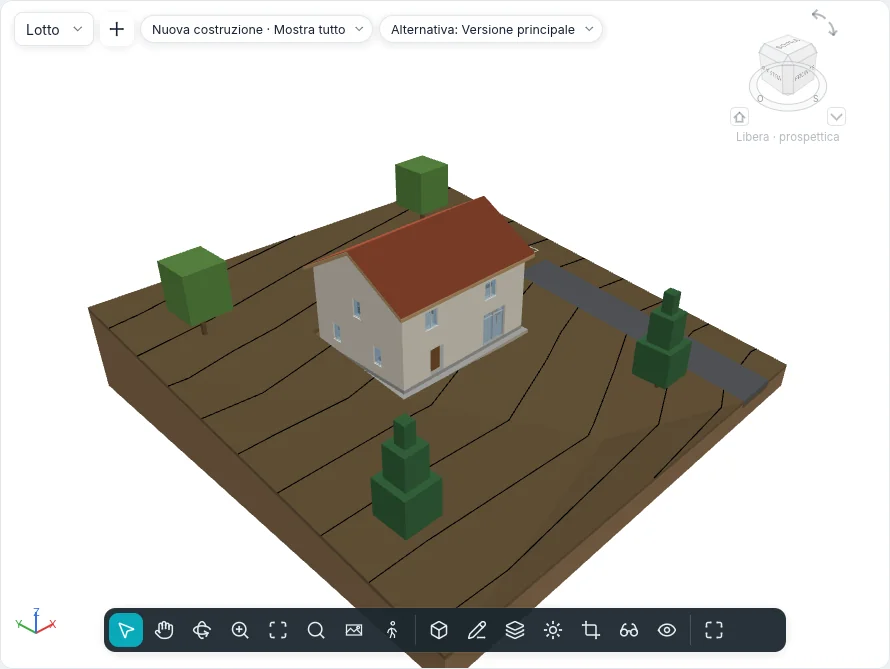

Planimetria e terreno
Il terreno su cui sta l'edificio e i disegni del lotto intorno si fanno con Masse e sito ▸ Sito e Modifica sito. Funzionano nelle piante e nella Planimetria; un terreno e una platea si disegnano anche nelle viste 3D, sul piano del loro livello.

Terreno
Un terreno è un solido: un contorno disegnato (con fori) su un livello, modellato da punti, con gli strati e lo spessore del suo tipo.
Terreno ▾ ha due modi:
| Modo | Come funziona |
|---|---|
| Crea da disegno | Modalità di disegno Crea contorno terreno, con il gruppo comune Disegna (linee, rettangolo, poligoni, cerchio, archi, Seleziona linee). Disegna un anello chiuso; un anello al suo interno è un foro. Termina modalità di modifica crea un terreno piano, con la sommità all'Offset di altezza |
| Crea da importazione | La finestra Aggiunta di punti dai layer selezionati: i layer di un DWG o DXF importato con le quote (linee e punti 3D) i cui punti modellano il terreno, oppure Crea da file di punti… (CSV o TXT, con l'unità scelta in Formato) |
Un file di punti riporta in ogni riga prima x, y e z; nomi e altre colonne si saltano, e di due punti con gli stessi x, y resta la z più alta. Oltre il limite delle Impostazioni del sito (20.000 punti di default, da 10.000 a 50.000) i punti si campionano fino al limite e un messaggio dice quanti ne sono rimasti.
Modifica della forma
Un terreno selezionato mostra il gruppo Modifica forma:
| Strumento | Come funziona |
|---|---|
| Aggiungi punto | Clicca dentro il contorno. Nella barra delle opzioni: Assoluto (la Quota altimetrica scritta, dalla Base quota altimetrica: livello corrente, punto base del progetto, punto di rilevamento, origine interna) o Lungo la superficie (uno scostamento sopra o sotto la superficie dove clicchi); gli Snap XYZ prendono la quota dell'angolo di un pavimento o dell'estremità di un muro, più l'Offset dagli snap |
| Modifica elementi secondari | Clicca un punto: trascinalo in pianta, o scrivi la sua altezza sopra la sommità originale del terreno |
| Aggiungi linea di divisione | Due clic: una piega della superficie, dritta tra le loro quote |
| Reimposta forma | Rimuove ogni punto e ogni linea di divisione |
| Semplifica terreno | Tiene una parte dei punti (1 000 punti al 70 % diventano 700) |
La superficie si triangola attraverso il contorno e i punti; le curve di livello seguono subito.
Tipo, strati e curve di livello
Il tipo del terreno ha la sua Struttura nella stessa finestra Strati del tipo di muri e pavimenti: lo strato segnato Variabile assorbe la forma, così il fondo resta piano. Visualizzazione contorno (Visualizzazione contorno nel pannello del terreno) elenca gruppi di curve di livello: Inizio, Fine, Incremento, Valore singolo o Valori multipli, lo stile di linea (primarie, secondarie, linee nascoste, spigoli della triangolazione) e una casella per spegnere un gruppo. Un progetto nuovo disegna le curve primarie ogni 5 m e le secondarie ogni metro; i tipi Strada asfaltata, Vialetto in ghiaia e Marciapiede non ne disegnano.
Le curve di livello si vedono anche sul terreno nelle viste 3D, con i loro stili di linea, nascoste dove l’edificio sta davanti.
In sezione il terreno è tagliato con i suoi strati e i motivi dei loro materiali. Una Quota altimetrica punto posata sul terreno ne legge la quota in quel punto.
Visibilità e grafica ▸ Terreno ha le sottocategorie Curve di livello primarie, Curve di livello secondarie, Linee nascoste, Linee di piega, Punti di contorno e Punti interni; le ultime tre sono spente finché non le accendi.
Opzioni del sito ▾ ▸ Ombreggiatura uniforme terreno rende lisci tutti i terreni negli stili ombreggiati.
Opzioni del sito ▾ ▸ Stabilità del vuoto di taglio: uno scavo che non riesce intero si riprova con il contorno spostato di qualche millimetro lungo x o y; Scava dice quanti scavi ha spostato.
Modifica del terreno
| Strumento | Come funziona |
|---|---|
| Sottoarea | Disegna un anello sul terreno selezionato (o prima clicca un terreno). Il suo Tipo ne dà il materiale; l'Offset sottoarea la solleva (un cordolo) o la affonda nel terreno che la ospita (con il suo Volume dello scavo) |
| Dividi terreno | Clicca il terreno, poi disegna un anello chiuso al suo interno o linee aperte da bordo a bordo. Una sottoarea che la divisione non può tenere chiede Elimina istanze |
| Unisci terreni | Clicca il terreno principale, poi il secondo: devono avere un bordo in comune o sovrapporsi. Rimuovi punti su bordi comuni è attivo di default |
| Scava / Rimuovi scavo | Con il terreno selezionato, clicca un pavimento, un tetto, una platea o un altro terreno che lo attraversa. Volume dello scavo individuale elenca ogni taglio |
| Livellamento | Modifica livellamento chiede una copia esatta o solo i punti del contorno; clicca un terreno di una fase precedente. Viene demolito nella fase corrente e la sua copia, nuova, si apre in modifica della forma. La copia riporta Scavo, Riporto e Scavo/riporto netto |
Un abaco dei Terreni elenca scavo e riporto, con il totale generale.
Platea
Platea disegna un anello chiuso sopra un terreno (Crea contorno platea, con Seleziona muri e Freccia di inclinazione). La sua sommità è all'Offset di altezza; il terreno sotto viene scavato o riportato fino alla sua faccia inferiore. Il suo tipo ha una Struttura di strati e il motivo di riempimento del dettaglio basso.
Elementi di sito e parcheggi
Elemento di sito posiziona alberi, arbusti, panchine, lampioni e idranti, uno a ogni clic (barra spaziatrice per ruotare); Parcheggio posiziona posti auto (90°, 60°, 45°, in linea, per disabili). Entrambi stanno sul terreno o sulla sottoarea sotto il clic e la seguono quando cambia. Seleziona nuovo host li sposta su un altro terreno o un'altra sottoarea; Ripeti in serie ne fa file.
Confini di proprietà
Confine di proprietà chiede come crearlo:
- Crea tramite disegno: le linee della modalità di disegno; un anello aperto avvisa che la sua area non può essere calcolata (termina di nuovo per lasciarlo aperto);
- Crea immettendo distanze e direzioni: la tabella Confini di proprietà, una riga per tratto con Distanza, Direzione (come N 45°00'00" E), Tipo (linea o arco), Raggio e S/D; Inserisci, Elimina, Su, Giù e Chiudi, che aggiunge il tratto di ritorno all'inizio. I tratti seguono il nord reale.
Un confine di proprietà selezionato mostra Modifica tabella. Opzioni del sito ▾ ▸ Dati confine di proprietà imposta la Visualizzazione angolo (direzione o gradi) e le unità. I confini di proprietà si vedono di default nelle planimetrie e nelle viste 3D; un abaco dei Confini di proprietà ne elenca nome e area.
Etichette delle curve di livello
Etichetta isoipse: clicca l'inizio e la fine di una linea che attraversa le curve di livello; ogni curva che attraversa mostra la sua quota, ruotata per leggersi dal nord di progetto. Il tipo dell'etichetta imposta il testo e se si etichettano solo le curve primarie.
La planimetria
Ogni progetto nuovo ha una Planimetria; Viste ▸ Pianta ▾ ▸ Planimetria ne crea un'altra, per il livello attivo: 1:200, tagliata sopra l'edificio fino a 10 m sotto il livello, orientata al Nord reale. Orientamento nelle sue proprietà la riporta al Nord di progetto.
Impostazioni del sito
Opzioni del sito ▾ ▸ Impostazioni del sito contiene le curve di livello del progetto (per i tipi di terreno che non impostano le proprie), il Materiale visibile in sezione e lo Spessore della poche dei tipi di terreno senza strati, i dati del confine di proprietà e il numero massimo di punti che un'importazione tiene.
Non ancora
Terreno da faccia, Collega topografia e Contesto circostante arrivano in una fase successiva.